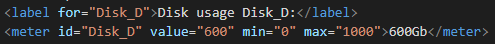

This element defines a scalar measurement within a known range or a fractional value. This is also known as a guage.
This is used in disk usage or the relevance of a query result etc.
This should not be used to indicate progress as in a progress bar. Progress bars should be done with the progress element.
Add a label for best accessebility practices
This is how its coded:
None
form - Specifies which form the meter belongs to
high - Specifies the range that is considered to be ahigh value
low - Specifies the range that is considered to be a low value
max - Specifies the maximum value of the range.
min - Specifies the minimum value of the range. Default value of the range. Default value is 0.
optimum - Specifies what value is the optimal value for tha guage.
value - Required attribute! Specifies the current value of the gauge.
The global attributes are supported.
The event attributes are supported.